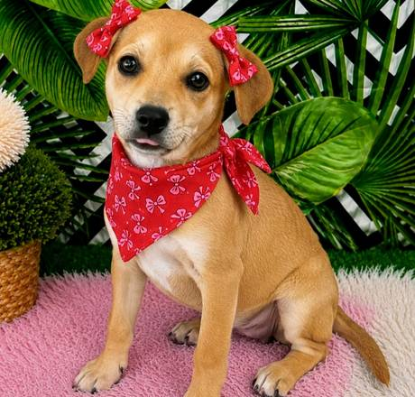
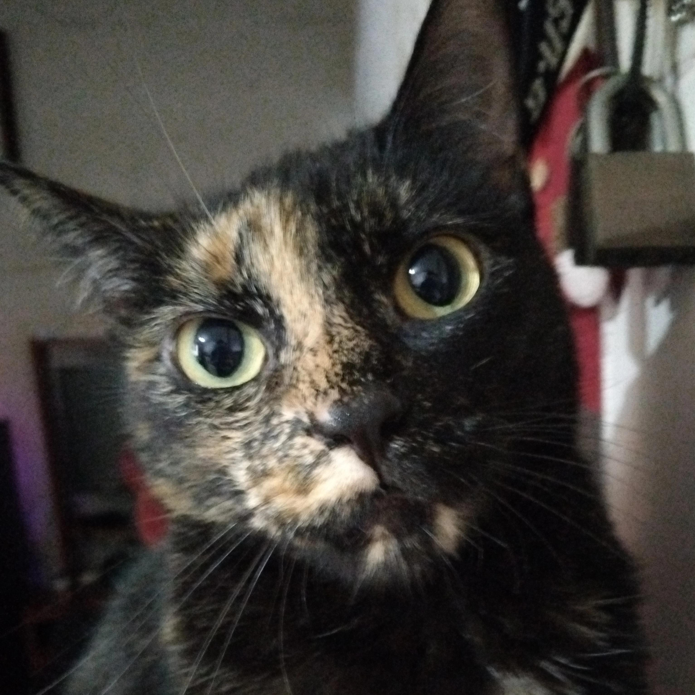
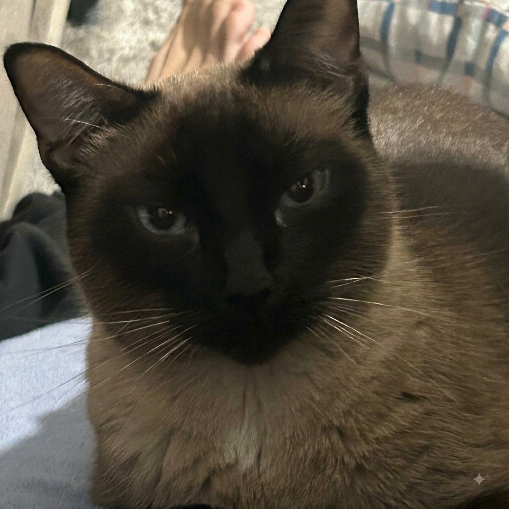
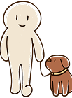
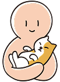
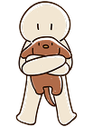
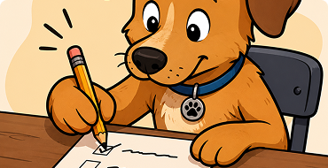
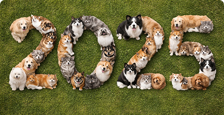
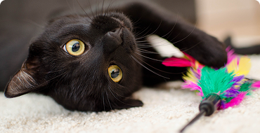

Melany
São José dos Campos, SP
Nosso site está cheio de doguinhos e gatinhos ansiosos por uma família. Vem ver!

São José dos Campos, SP

Itapevi, SP

Osasco, SP

Guaianases, SP

Guaianases, SP

Santana de Parnaíba, SP
Guaianases, SP
São José dos Campos, SP

Nesse exato momento, existem milhares de doguinhos e gatinhos esperando um humano para chamar de seu.

E não há recompensa maior do que vê-los se tornando aquela coisinha alegre e saudável depois de uma boa dose de cuidado e carinho.

Pensando bem, a pergunta é outra:
se você pode mudar o destino de um animal de rua, por que não faria isso?
Veja nossas últimas dicas sobre cuidados com seu pet

Olá, amigos! Desde 2012, conectamos mais de 12 mil cães e gatos a pessoas que queriam um novo amigo para chamar de seu. Agora, precisamos aprender como cuidar...Ler mais

Olá, amigos! Desde 2012, conectamos mais de 12 mil cães e gatos a pessoas que queriam um novo amigo para chamar de seu. Agora, precisamos aprender como cuidar...Ler mais

Olá, amigos! Desde 2012, conectamos mais de 12 mil cães e gatos a pessoas que queriam um novo amigo para chamar de seu. Agora, precisamos aprender como cuidar...Ler mais